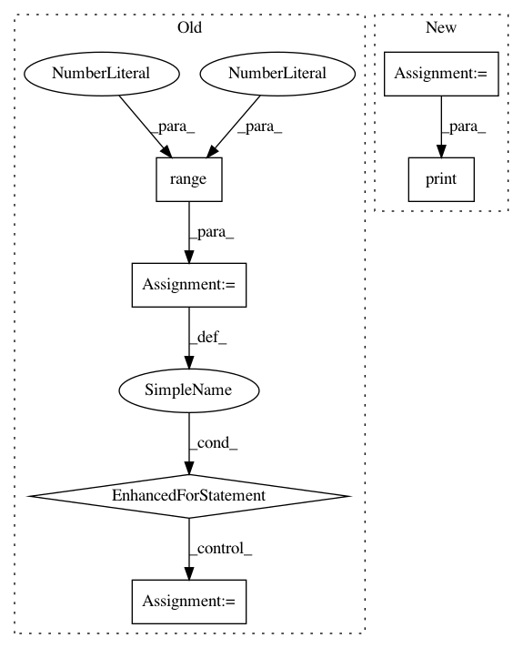

407a5112ab430db6f23fc4317a7400ada797d274,examples/bench.py,,,#,5
Before Change
import mord
import numpy as np
for n_samples in range(40, 200, 20):
X, y = datasets.make_classification(n_samples=n_samples, n_features=10000,
n_classes=5, n_informative=5)
clf1 = linear_model.LogisticRegressionCV(solver="lbfgs",
multi_class="multinomial")
clf2 = grid_search.GridSearchCV(mord.LogisticIT(), {"alpha": np.logspace(
-3, 3, 10)})
cv = cross_validation.StratifiedShuffleSplit(y, test_size=0.3)
print(cross_validation.cross_val_score(clf1, X, y, cv=cv).mean())
print(cross_validation.cross_val_score(clf2, X, y, cv=cv).mean())
print()
After Change
boston = datasets.load_boston()
X, y = boston.data, np.round(boston.target).astype(np.int)
y -= y.min()
clf1 = linear_model.LogisticRegression(
solver="lbfgs", multi_class="multinomial")
clf1.fit(X, y)
print("Mean Absolute Error of LogisticRegression: %s" %
metrics.mean_absolute_error(clf1.predict(X), y))
clf2 = mord.LogisticAT(alpha=1.)
clf2.fit(X, y)
In pattern: SUPERPATTERN
Frequency: 3
Non-data size: 6
Instances
Project Name: fabianp/mord
Commit Name: 407a5112ab430db6f23fc4317a7400ada797d274
Time: 2015-10-21
Author: f@bianp.net
File Name: examples/bench.py
Class Name:
Method Name:
Project Name: rusty1s/pytorch_geometric
Commit Name: f6532b3c4c329e6d5d5fb846acc441df47616c4c
Time: 2020-03-22
Author: matthias.fey@tu-dortmund.de
File Name: examples/gnn_explainer.py
Class Name:
Method Name:
Project Name: estnltk/estnltk
Commit Name: cf5f38373ec0a08518dae7051e53e44c316c166c
Time: 2015-07-28
Author: karl.valliste@gmail.com
File Name: estnltk/prettyprinter/prettyprinter.py
Class Name: PrettyPrinter
Method Name: render